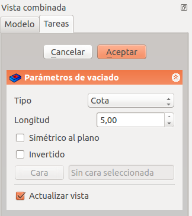

PartDesign Pocket/es
This documentation is not finished. Please help and contribute documentation.
GuiCommand model explains how commands should be documented. Browse Category:UnfinishedDocu to see more incomplete pages like this one. See Category:Command Reference for all commands.
See WikiPages to learn about editing the wiki pages, and go to Help FreeCAD to learn about other ways in which you can contribute.
|
|
| Ubicación en el Menú |
|---|
| Part Design → Crear una característica substractivo → Cajera |
| Entornos de trabajo |
| DiseñoPieza |
| Atajo de teclado por defecto |
| Ninguno |
| Introducido en versión |
| - |
| Ver también |
| DiseñoPieza Pastilla |
Description
Descripción
La herramienta Cajera recorta un sólido extruyendo un boceto (o una cara del sólido) en una trayectoria recta y restándolo del sólido.

El perfil del boceto (A) fue mapeado a la cara superior del sólido de la base (B); resultado después de cajear a través de la derecha.
Usage
Uso
- Seleccione el croquis que se va a cajear.
- El croquis debe estar mapeado a la cara plana de un sólido existente o a una característica de Diseño Pieza, o aparecerá un mensaje de error. version 0.16 y abajo
- Pulse el
 Cajera .
Cajera . - Establezca los parámetros del Cajera (véase la siguiente sección).
- Haga clic en Aceptar.
Opciones
{kind=link}

When creating a pocket, or after double-clicking an existing pocket in the Tree View, the Pocket parameters task panel is shown. It offers the following settings:

Start
Sets where the pocket begins. By default the pocket starts at the sketch or face used as its profile. introduced in 26.3
- Profile (default): the pocket starts directly at the profile's sketch plane or face.
- Offset: the pocket starts at a numeric distance from the profile, entered in the Start Offset field.
- Reference: the pocket starts at a face, datum plane, or sketch selected with the Select reference button.
This is useful to create multiple features from a single master sketch without needing separate offset planes for each one.
Type
Type offers five different ways of specifying the length of the pocket:
Dimension
Al crear una cajera, el cuadro de diálogo Parámetros de la cajera ofrece cinco formas diferentes de especificar la longitud (profundidad) a la que se extruirá la cajera:
Dimensión
Introduzca un valor numérico para la profundidad de la cajera. La dirección por defecto de la extrusión es hacia el interior del soporte. Las extrusiones se producen normal respecto al plano de croquis que las define. No son posibles las cotas negativas. Utilice la opción Invertida en su lugar.
Al principio
La cajera se extruirá hasta la primera cara del soporte en la dirección de extrusión. En otras palabras, cortará a través de todo el material hasta llegar a un espacio vacío.
Por todo
La cajera cortará todo el material en la dirección de extrusión. Con la opción Simétrico al plano la cajera cortará todo el material en ambas direcciones.
Nota: Por razones técnicas, por todo es en realidad una cajera de 10 metros de profundidad. Si necesitas cajeras más profundos, utiliza Dimensión.
Through all
The pocket will extend up to the last face of the support it encounters in its direction. With the option Symmetric to plane the pocket will cut through all material in both directions. Note that for technical reasons, Through All is actually a 10 meter deep pocket. If you need deeper pockets, use the type Dimension.
To first
The pocket will extend up to the first face of the support it encounters in its direction.
Up to face
Hasta la cara
La cajera se extruirá hasta una cara del soporte que se puede elegir haciendo clic sobre ella.
Dos dimensiones
Permite introducir una segunda longitud en la que la cajera debe extenderse en sentido contrario (hacia el interior del soporte). De nuevo se puede cambiar marcando la opción Invertida. version 0.17 y superiores
Two dimensions
This allows to enter a second length in which the pocket should extend in the opposite direction. The directions can be switched by checking the Reversed option.
Up to shape
introduced in 1.0: The pocket will extend up to the selected shape. Optionally press the Select shape button and select a shape. Leave the Select all faces checkbox enabled or disable it, press the Select button and select the faces up to which the pocket should be created.
Offset to face
Offset from face at which the pocket will end. This option is only available if Type is Through all, To first or Up to face.
Length
Defines the length of the pocket. This option is only available if Type is Dimension or Two dimensions. The length is measured along the direction vector, or along the normal of the sketch or face. Negative values are not possible. Use the Reversed option instead.
2nd length
Defines the length of the pocket in the opposite direction. This option is only available if Type is Two dimensions.
Symmetric to plane
Check this option to extrude half the given length to either side of the sketch or face, if Type is Dimension, or Through all if that is the Type.
Reversed
Reverses the direction of the pocket.
Direction
Direction/edge
You can select the direction of the extrusion:
- Sketch normal or Face normal: The sketch or face is extruded in the opposite direction of its normal. If you have selected several sketches or faces to be extruded, the normal of the first one will be used.
- Select reference…: The sketch or face is extruded in the opposite direction of a straight edge or a datum line selected from the Body.
- Custom direction: The sketch or face is extruded in the direction of the specified vector.
Show direction
If checked, the pocket direction will be shown. In case the pocket uses a Custom direction, it can be changed.
Length along sketch normal
If checked, the pocket length is measured along the sketch or face normal, otherwise along the custom direction.
Taper angle
Tapers the pocket in the extrusion direction by the given angle. A positive angle means the outer pocket border gets wider. Note that inner structures receive the opposite taper angle. This is done to facilitate the design of molds and molded parts. This option is only available if Type is Dimension or Two dimensions.
2nd taper angle
Tapers the pocket in the opposite extrusion direction by the given angle. See Taper angle. This option is only available if Type is Two dimensions.
Properties
Data
Part Design
- DatosRefine (
Bool): True or false. Cleans up residual edges left after the operation. This property is initially set according to the user's settings (found in Preferences → Part Design → General → Model settings).
- DatosType (
Enumeration): Defines how the pocket will be extruded, see Options. - DatosLength (
Length): Defines the length of the pocket, see Options. - DatosLength2 (
Length): Second pocket length in case the DatosType is TwoLengths, see Options. - DatosUse Custom Vector (
Bool): If checked, the pocket direction will not be the normal vector of the sketch but the given vector, see Options. - DatosDirection (
Vector): Vector of the pocket direction if DatosUse Custom Vector is used. - DatosReference Axis (
LinkSub) - DatosAlong Sketch Normal (
Bool): If true, the pocket length is measured along the sketch normal. Otherwise and if DatosUse Custom Vector is used, it is measured along the custom direction. - DatosUp To Face (
LinkSub): A face the pocket will extrude up to, see Options. - DatosOffset (
Length) - DatosTaper Angle (
Angle) - DatosTaper Angle2 (
Angle) - DatosStart Type (
Enumeration): sets how the pocket start is defined (Profile plane, Offset, Reference), see Options. introduced in 26.3 - DatosStart Offset (
Length): distance between the profile and the start of the pocket. Only used if DatosStart Type is Offset. introduced in 26.3 - DatosStart Reference (
LinkSub): a face, plane, or sketch the pocket starts from. Only used if DatosStart Type is Reference. introduced in 26.3
Sketch Based
- DatosProfile (
LinkSub) - DatosMidplane (
Bool) - DatosReversed (
Bool) - DatosAllow Multi Face (
Bool)
Limitations
Limitaciones
- Utiliza el tipo Dimensión o Por todo si es posible porque los otros tipos a veces dan problemas cuando se crea un patrón con ellos
- En otros casos, la operación de cajera tiene las mismas limitaciones que la operación de pastilla.
- Helper tools: New Body, New Sketch, Attach Sketch, Edit Sketch, Validate Sketch, Check Geometry, Sub-Shape Binder, Clone
- Modeling tools:
- Additive tools: Pad, Revolution, Additive Loft, Additive Pipe, Additive Helix, Additive Box, Additive Cylinder, Additive Sphere, Additive Cone, Additive Ellipsoid, Additive Torus, Additive Prism, Additive Wedge
- Subtractive tools: Pocket, Hole, Groove, Subtractive Loft, Subtractive Pipe, Subtractive Helix, Subtractive Box, Subtractive Cylinder, Subtractive Sphere, Subtractive Cone, Subtractive Ellipsoid, Subtractive Torus, Subtractive Prism, Subtractive Wedge
- Boolean: Boolean Operation
- Dress-up tools: Fillet, Chamfer, Draft, Thickness
- Transformation tools: Mirror, Linear Pattern, Polar Pattern, Multi-Transform, Scale
- Additional tools: Shape Binder, Involute Gear, Sprocket, Shaft Design Wizard
- Context menu: Suppressed, Set Tip, Move Object To…, Move Feature After…
- Preferences: Preferences, Fine tuning
- Getting started
- Installation: Download, Windows, Linux, Mac, Additional components, Docker, AppImage, Ubuntu Snap
- Basics: About FreeCAD, Interface, Mouse navigation, Selection methods, Object name, Preferences, Workbenches, Document structure, Properties, Help FreeCAD, Donate
- Help: Tutorials, Video tutorials
- Workbenches: Std Base, Assembly, BIM, CAM, Draft, FEM, Inspection, Material, Mesh, OpenSCAD, Part, PartDesign, Points, Reverse Engineering, Robot, Sketcher, Spreadsheet, Surface, TechDraw, Test Framework
- Hubs: User hub, Power users hub, Developer hub